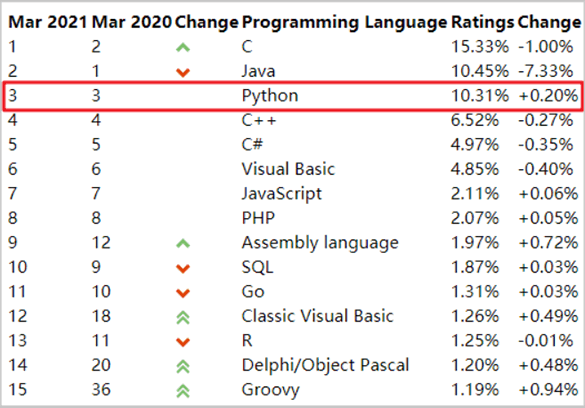
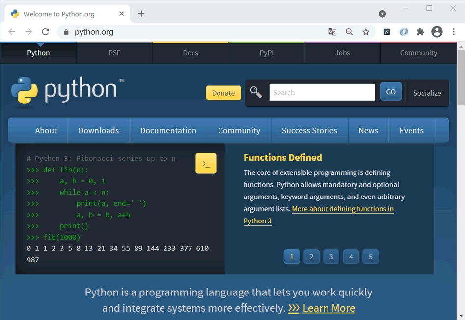
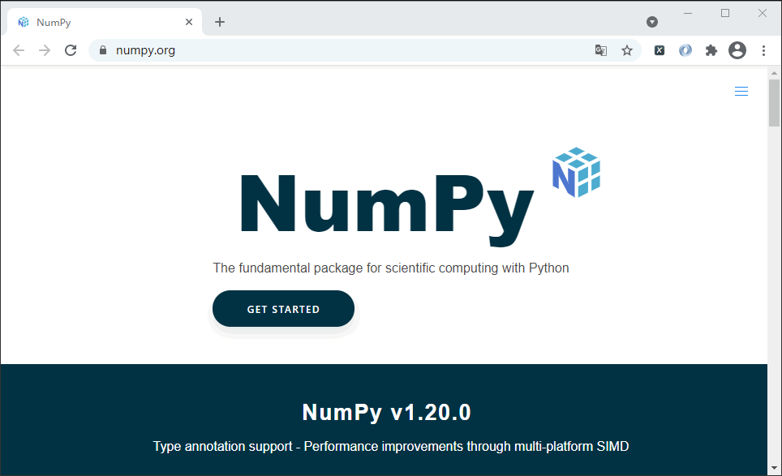
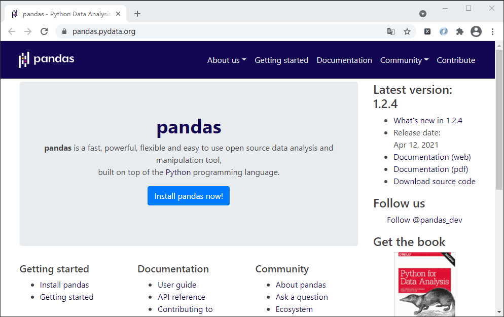
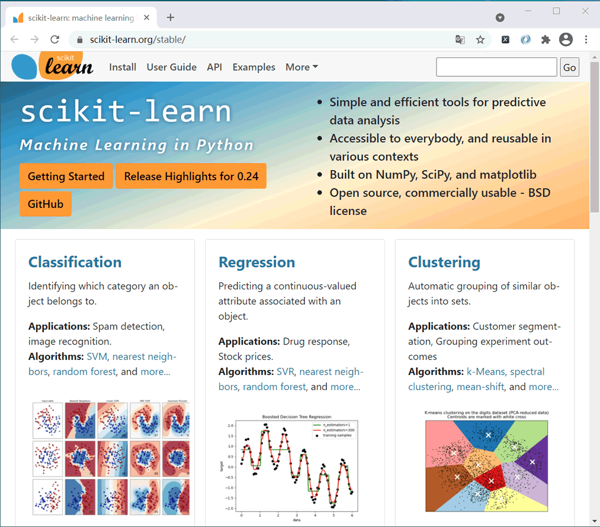

Python机器学习环境搭建
常言道“工欲善其事，必先利其器”，在学习机器学习算法之前，我们需要做一些准备工作，首先要检查自己的知识体系是否完备，其次是要搭建机器学习的开发环境。本教程以讲解算法为主，不会涉及太复杂的应用案例，在讲解过程中会穿插一些示例代码，这样不仅能够帮助你理解算法原理，同时又能让你体会到算法的应用过程。
机器学习的研究方向有很多，比如图像识别、语音识别、自然语言处理、以及深度学习等，因此它是一门较为复杂的技术，有一定的“门槛”要求。如果你对编程知识一无所知，就想熟练应用机器学习，这几乎是天方夜谭。那么您应该掌握哪些知识才能更好地学习本教程呢？包括下列四大核心知识。
2020 年 Python 官方宣布暂停对 Python 2.x 版本的维护工作，并把 2.7 版本作为最后一个支持维护的版本。截止本教程书写前，Python 最新版本是 3.9 版本，因此建议你选择 3.6 以上版本来安装使用。Python 除了自身的拥有强大的标准库外，还有非常丰富的第三方支持库。您可使用 Python 内置的包管理器
Python 官方网站提供了完善的资料文档和版本下载支持（https://www.python.org/）。
NumPy 的安装方式非常简单，在安装好 Python 的基础上使用包管理器来安装，命令如下所示：
Pandas 安装非常简单，同样可以使用 pip 包管理器完成安装，如下所示：
Scikit-Learn 的基本功能主要被分为六大部分：分类，回归，聚类，数据降维，模型选择和数据预处理。本教程将围绕机器算法的讲解 Scikit-Learn 实际的应用。 Scikit-Learn 安装也非常简单，执行以下命令即可安装：
机器学习的研究方向有很多，比如图像识别、语音识别、自然语言处理、以及深度学习等，因此它是一门较为复杂的技术，有一定的“门槛”要求。如果你对编程知识一无所知，就想熟练应用机器学习，这几乎是天方夜谭。那么您应该掌握哪些知识才能更好地学习本教程呢？包括下列四大核心知识。
Python
对于编程人员来说，想到“机器学习”第一个关联起来的词汇就是“Python”。近几年， Python 之所成为炙手可热的“流量小生”，这与它对“人工智能”领域的“鲸吞”有很大关系。目前而言，在人工智能领域能与 “Python”一较高下的只有 R 语言。不过由于 Python 语言的简洁性、易读性，以及 Python 对科学计算和深度学习框架（Tensorflow、Pytorch 等）的良好支持等，使得 Python 处于远远领先的位置。

图1：2021年编程语言排行榜
目前为止，Python 是对“机器学习”最为友好的一门语言，因此学习机器学习的第一个前提条件就是熟练应用 Python 语言。关于 Python 的学习不再本教程介绍范围之内，您可以参考《Python基础教程》进行针对性学习。图1：2021年编程语言排行榜
2020 年 Python 官方宣布暂停对 Python 2.x 版本的维护工作，并把 2.7 版本作为最后一个支持维护的版本。截止本教程书写前，Python 最新版本是 3.9 版本，因此建议你选择 3.6 以上版本来安装使用。Python 除了自身的拥有强大的标准库外，还有非常丰富的第三方支持库。您可使用 Python 内置的包管理器
pip轻松地管理资源包的下载与更新。Python 官方网站提供了完善的资料文档和版本下载支持（https://www.python.org/）。

图2：Python官网首页(点击高清图)
图2：Python官网首页(点击高清图)
NumPy
NumPy（https://numpy.org/）属于 Python 的第三方扩展程序包，它是 Python 科学计算的基础库，提供了多维数组处理、线性代数、傅里叶变换、随机数生成等非常有用的数学工具。NumPy 的安装方式非常简单，在安装好 Python 的基础上使用包管理器来安装，命令如下所示：
pip install numpy我们知道机器学习与数学有着非常紧密的关系，因此熟练的应用 NumPy 也是你要面对的第一个挑战，它可以让你认识到 Python 在科学计算方面的优势。NumPy 并不在本教程讲解范畴内，这里推荐大家参考《NumPy 教程》进行学习。

图3：NumPy官方网站
图3：NumPy官方网站
Pandas
Pandas 属于 Python 第三方数据处理库，它基于 NumPy 构建而来，主要用于数据的处理与分析。我们知道对于机器学习而言数据是尤为重要，如果没有数据就无法训练模型。Pandas 提供了一个简单高效的 DataFrame 对象（类似于电子表格），它能够完成数据的清洗、预处理以及数据可视化工作等。除此之外，Pandas 能够非常轻松地实现对任何文件格式的读写操作，比如 CSV 文件、json 文件、excel 文件。Pandas 同样不在本教程的介绍范畴之内，推荐您阅读《Pandas 教程》。

图4：Pandas官方网站
图4：Pandas官方网站
Pandas 安装非常简单，同样可以使用 pip 包管理器完成安装，如下所示：
pip install pandas
Scikit-Learn
最后介绍机器学习中的重要角色 Scikit-Leran（官网：https://scikit-learn.org/stable/），它是一个基于 Python 语言的机器学习算法库。Scikit-Learn 主要用 Python 语言开发，建立在 NumPy、Scipy 与 Matplotlib 之上，它提供了大量机器学习算法接口（API），因此你可以把它看做一本“百科全书”。由于 Scikit-Learn 的存在极大地提高了机器学习的效率，让开发者无须关注数学层面的公式、计算过程，有更多的更多的时间与精力专注于业务层面，从而解决实际的应用问题。

图5：Scikit-Learn官方网站
图5：Scikit-Learn官方网站
Scikit-Learn 的基本功能主要被分为六大部分：分类，回归，聚类，数据降维，模型选择和数据预处理。本教程将围绕机器算法的讲解 Scikit-Learn 实际的应用。 Scikit-Learn 安装也非常简单，执行以下命令即可安装：
pip install scikit-learn安装完成后导入 scikit 即可应用 Scikit-Learn，如下所示：
import sklearn当你想要调用机器学习算法时也非常简单，Scikit-Learn 已经将算法按模型分类，比如线性回归算法可以从线性模型中调用，如下所示：
from sklearn import linear_model model = linear_model.LinearRegression()后续内容会逐一讲解 Scikit-Learn 库中的常用算法示例应用。本节介绍了在学习机器学习算法前，你应该掌握的必备知识。如果你已经掌握了本节介绍的前三个核心知识，并且还具备一定的数学基本知识（高中即可），那么你就拥有了学习机器学习算法的能力。
关注公众号「站长严长生」，在手机上阅读所有教程，随时随地都能学习。内含一款搜索神器，免费下载全网书籍和视频。

微信扫码关注公众号